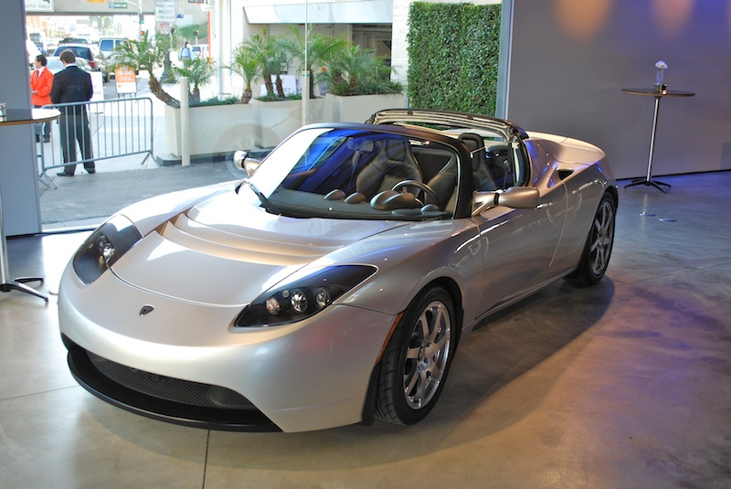
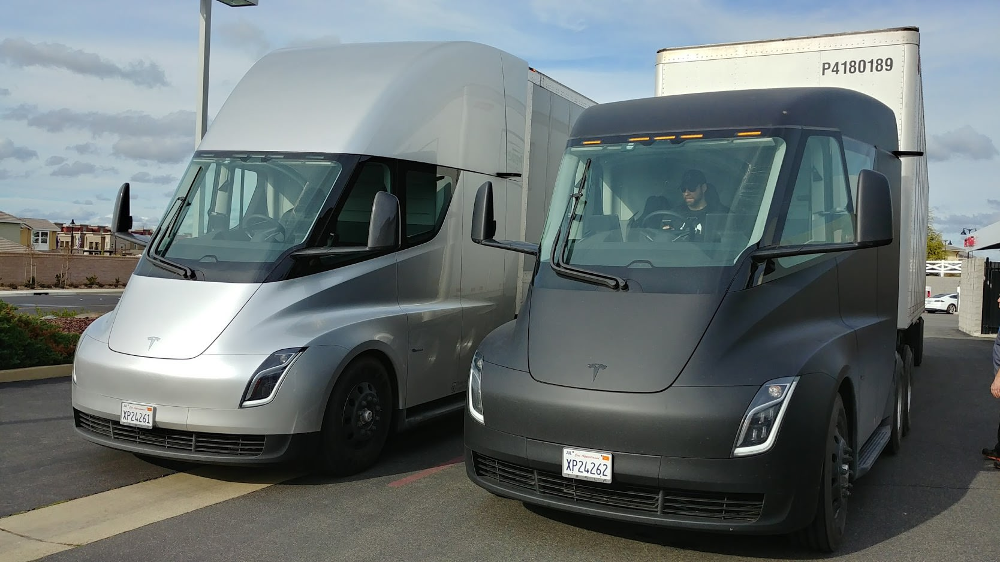
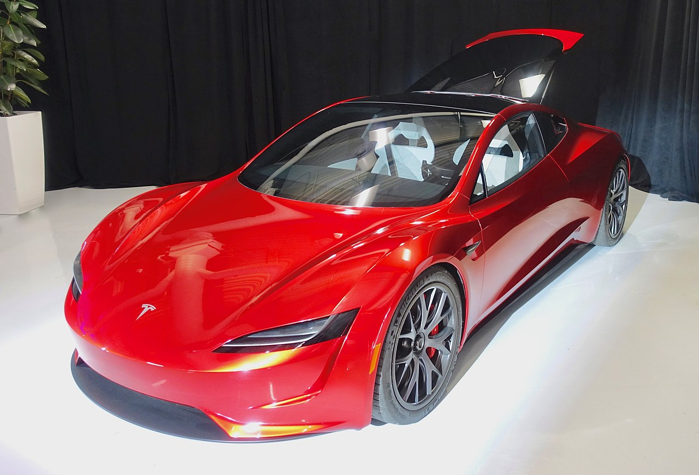

Tesla (ранее Tesla Motors) — американская компания, производитель электромобилей и (через
свой филиал SolarCity)
решений для хранения электрической энергии[10][11][12][13].
Компания была основана в июле 2003 года Мартином Эберхардом[en] и Марком Тарпеннингом[en], но нынешнее
руководство компании называют сооснователями Илона Маска, Джеффри Брайана Страубела и Иэна Райта[14][15].
В 2019 году Tesla стала крупнейшим производителем электромобилей в мире[16]. Седан Tesla Model 3 стал самым
продаваемым электромобилем в истории, преодолев отметку 800 тысяч[17].
В 2021 Tesla вышла на первое место по капитализации среди автомобильных компаний, обойдя японского
автопроизводителя Toyota[18].
Названа в честь всемирно известного электротехника и физика Николы Теслы[17].
История
Компания Tesla (основанная как Tesla Motors) была зарегистрирована 1 июля 2003 года Мартином Эберхардом и
Марком Тарпеннингом. Ян Райт был третьим сотрудником Tesla, присоединившимся к ней несколько месяцев
спустя.
В феврале 2004 года трое основателей привлекли инвестиции в размере 7,5 млн долларов США, при этом Илон
Маск
внес 6,5 млн долларов. Маск стал председателем совета директоров и назначил Эберхарда генеральным
директором.
Целью Tesla было начать со спортивного автомобиля премиум-класса, ориентированного на первых пользователей,
а затем перейти к более массовым автомобилям, включая седаны и доступные компактные автомобили. Прототипы
первого автомобиля Tesla были официально представлены публике 19 июля 2006 года в Санта-Монике
(Калифорния).
В 2006 году Маску удалось, проведя несколько раундов финансирования от инвестиционных фондов и известных
предпринимателей (включая соучредителей Google), привлечь 100 млн долларов. В результате Tesla начала
производство своей первой модели Roadster в 2008 году.
В январе 2010 года Tesla получила от Министерства энергетики США заём в размере 465 миллионов долларов,
который компания погасила в 2013 году. В мае 2010 года Tesla начала строительство фабрики во Фримонте
(Калифорния) для производства Model S.
29 июня 2010 года Tesla начала первичное публичное размещение акций (IPO) на NASDAQ, став первой
американской автомобильной компанией, осуществившей IPO, после Ford Motor в 1956 году. Это дало компании
доступ к крупнейшему источнику финансирования.
В июне 2012 года Tesla начала производство своего второго автомобиля — Model S. В июле 2017 года Tesla
начала продавать седан Model 3.
В мае 2017 года Илон Маск представил план развития компании, предусматривающий добавление в линейку
электромобилей и грузовика.
В 2019 году Tesla выкупит производителя батарей Maxwell, сумма сделки составит примерно 218 миллионов
долларов. Обе стороны планируют завершить сделку во втором квартале 2019 года.
14 марта 2019 года был представлен новый электромобиль Tesla Model Y.
В ноябре 2020 года Tesla, Uber и ещё 26 американских компаний учредили организацию Zero Emission Transport
Association (ZETA), которая будет лоббировать увеличение количества электромобилей в США. Ассоциация будет
выступать за изменения в национальной политике, которые подтолкнут отрасль к полному переходу на
электромобили в секторах транспорта лёгкой, средней и большой грузоподъёмности к 2030 году.
Планы
В 2020 году в своем Твиттере Илон Маск, сообщил, что новый сервис Robotaxi готов к использованию уже в этом
году. Нововведение относится ко всем моделям Tesla и представляет собой парк полностью автономных такси.
Роботизированные электрокары смогут развозить пассажиров без привлечения водителя благодаря «умной» системе
Full Self-Driving. Управлять ими можно будет с помощью мобильного приложения. Таким образом будет создана
система каршеринга: когда владелец электромобиля сможет на расстоянии сдавать в аренду свою машину. Прибыль
от таких поездок будет разделена между хозяином машины и компанией. На данный момент система полностью
готова и функционирует (по словам Маска). Дата внедрения проекта Robotaxi зависит только от согласования с
контролирующими органами и выдачи разрешения на автономное вождение 5 уровня.
11 мая 2021 года стало известно о том, что компания отказалась от планов покупки земли в Шанхае для
расширения своего завода в этом городе.
21 июля 2021 года основатель Илон Маск заявил в Twitter, что его компания намерена сделать свою сеть станций
быстрой зарядки доступной для электромобилей других производителей.
Технические проблемы
В ноябре 2015 года, после единичного случая обнаружения владельцем ненадёжности замка ремня безопасности
переднего пассажирского сиденья на Model S (неправильно собранное болтовое соединение), несмотря на
отсутствие
дефекта в 3000 проверенных автомобилях, компания отозвала все 90 тысяч автомобилей для проверки и
исправления, в
случае обнаружения дефекта, через авторизованные станции техобслуживания.
В апреле 2016 года компания отозвала 2700 автомобилей Model X из-за обнаруженного в ходе испытаний дефекта
крепления третьего ряда сидений, из-за которого сиденья могут опрокинуться вместе с пассажирами в случае
лобового столкновения.
7 мая 2016 года следуя по трассе US 27a недалеко от городка Вилистон (Williston), Флорида, США автомобиль
Tesla
S столкнулся с полуприцепом, который буксировал трактор. Трактор поворачивал налево, когда автомобиль на
полном
ходу поднырнул под полуприцеп, при этом у него снесло крышу. Далее, автомобиль вылетел с дороги и
перевернулся
три раза. Находившийся за рулём 40-летний Джошуа Браун (Joshua Brown) погиб. По информации фирмы Tesla,
в
момент столкновения автомобиль двигался на автопилоте, но ни автоматика, ни водитель не начали
торможение.
Это первый в истории случай гибели водителя за рулём автомобиля, ведомого автопилотом. Национальное
управление
безопасностью движения на трассах США начало собственное расследование аварии. Расследование было
закончено
в январе 2017 года, в заключении говорится, что автопилот автомобиля Tesla был исправен и работал в полном
соответствии с заданным алгоритмом. Далее следуют пояснения. Проведённое в 2007—2011 годах изучение систем
автоматического торможения показало, что они неадекватно реагируют на быстро движущиеся в поперечном
направлении
объекты. Поэтому, было рекомендовано исключить этот сценарий из алгоритма работы системы. На 2016 модельный
год
ни один производитель автомобилей или автокомпонентов не заявил систему отслеживания поперечно двигающихся
объектов. Доскональные испытания автомобиля Tesla Model S 85D, проведённые после аварии, показали, что
автопилот
автомобиля прекрасно реагирует на параллельно движущиеся автомобили, спереди и сбоку, в том числе и на
маневрирующие. Реакции же на поперечно движущийся объект, как это произошло в аварии во Флориде, в системе
не
предусмотрено.
Пожароопасность автомобилей Tesla
Согласно данным, предоставленным компанией Tesla, Национальной ассоциацией противопожарной защиты и
Министерством транспорта США, с 2012 по 2018 года происходило одно возгорание электромобиля на 170 миллионов
миль пробега. Автомобили с двигателем внутреннего сгорания за тот же промежуток времени имеют один пожар на
19
миллионов миль пробега.
Модельный ряд:

Tesla Roadster
Спортивный электромобиль, первый автомобиль фирмы. Официальная презентация состоялась 19 июля 2006 года в
городе Санта-Моника, Калифорния.
Tesla Motors провела конкурс для выбора вида запланированных двух Tesla Roadster, выданных британским
производителем спортивных автомобилей Lotus. Автомобили были получены.
Первые 1000 Tesla Roadster были сделаны в течение одного месяца. Цена одного автомобиля составила 100 000
долларов США. Серийное производство началось в марте 2008 года.
Эта модель продавалась до 2012 года, поскольку контракт с Lotus на поставку 2500 машин истёк в конце 2011
года. Компания перестала принимать заявки на американском рынке в августе 2011 года[32]. Следующее
поколение
этой модели планировалось представить в 2019 году.

Tesla Semi
16 ноября 2017 Tesla провела презентацию электрического тягача Tesla Semi, производство которого
начнется в 2021 году. Запас хода у электрогрузовика составляет примерно 800 км (возможно 900 км) при
загрузке в 40 тонн.
Хотя иногда автомобиль называют первым в мире представителем класса электрогрузовиков[55], он был
представлен позже MFTBC E-Fuso Vision One.

Tesla Roadster 2.0
Второе поколение электромобиля Tesla Roadster анонсированное в ноябре 2017 года. Среди основных
характеристик автомобиля были заявлены: максимальная скорость — свыше 400 км/ч, время разгона с 0 до 96.5
км/ч — 1,9 секунды, максимальный пробег на одной зарядке — до 1000 км. Старт серийного производства
ожидается в 2022 году.
Финансовые факты
По состоянию на 1 июля 2020 года Tesla стала самой дорогой автомобильной компанией мира.
9 сентября 2020 года из-за обвала акций Тесла Илон Маск за один день потерял 16,3 миллиарда долларов
США.